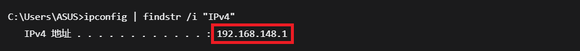
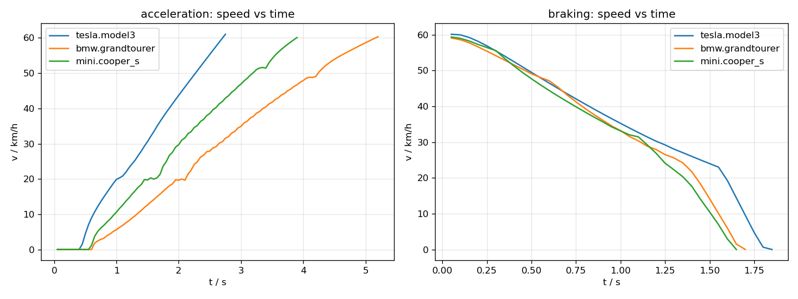
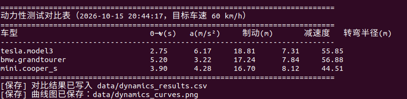

基于 CARLA 的地面载具动力性测试
本模块在 CARLA 中对地面载具做三项动力性（纵向与转向性能）测试，并支持多车型横向对比： 0→60 km/h 加速时间、60→0 制动距离、稳态转弯半径。三项指标都同时给出实测值与 理论值，便于判断结果是否合理。
与仓库已有模块的区别
本模块不做控制算法，而是做被控对象本身的性能测量：
carla_keyboard_control、ackermann_control等解决"怎么把车开起来"；aeb_collision_avoidance用"所需制动距离"作为决策判据来设计制动系统；- 本模块反过来——测出车辆真实的加速能力、制动能力和转向能力，并把多车型放在同一套 流程下比较，为标定、选型和后续控制算法的参数设定提供依据。
1. 运行环境
| 项目 | 版本 / 说明 |
|---|---|
| 宿主机 | Windows 11，CARLA 0.9.16（Windows 发行版解压即用，双击其中的 CarlaUE4.exe） |
| 虚拟机 | Ubuntu 22.04 LTS（VMware），ROS 2 Humble，Python 3.10.12 |
| Python 依赖 | carla==0.9.16、numpy；matplotlib 可选（只用于画曲线图） |
| 硬件 | 能跑起 CARLA 服务端的独立显卡（本模块的测量不依赖渲染帧率） |
安装客户端（Ubuntu 22.04 + Python 3.10 对应 cp310 的 wheel，依赖清单见功能包内的 requirements.txt）：
cd src/ground/carla_vehicle_dynamics_test
python3 -m pip install --user -r requirements.txt -i https://pypi.tuna.tsinghua.edu.cn/simple
2. 目录结构
src/ground/carla_vehicle_dynamics_test/
├── main.py 统一入口（仓库约定：入口为 main.*）
├── main.sh / main.bat 一键入口
├── carla_vehicle_dynamics_test/
│ ├── metrics.py 纯数学函数：加速度、制动距离、圆拟合、理论转弯半径
│ ├── carla_utils.py CARLA 连接、同步步进、生成指定车型、车道保持、复位
│ ├── runner.py 三项测试的测量流程
│ ├── app.py 命令行参数、对比表、CSV、曲线图
│ └── dynamics_node.py ROS 2 节点：跑测试并把结果发布到 /dynamics/result
├── test/
│ ├── test_metrics.py 指标函数单元测试（38 项，不需要 CARLA）
│ └── test_physics_parse.py 车辆物理参数解析测试（18 项，假对象，不需要 CARLA）
├── launch/main.launch.py ROS 2 启动入口
├── requirements.txt 依赖清单（carla==0.9.16、numpy，matplotlib 可选）
├── package.xml / setup.py / setup.cfg
└── README.md
3. 计算原理
3.1 平均加速度
车辆从速度 变到 用时 ，区间平均加速度为
程序在起始时刻读一次速度、跨过目标车速那一帧再读一次，两者之差除以用时即为平均加速度。 采样间隔由同步模式的步长决定（默认 0.05 s，即 20 Hz）。
3.2 制动距离与平均减速度
匀减速假设下，制动距离与减速度的关系为
程序沿轨迹逐帧累加位移得到实测制动距离 ，再由上式反推平均减速度 ； 随后把 代回 与实测值对照。二者恒等并非"验证成功"， 它只说明公式被正确使用；真正有信息量的是不同车型之间的差异（见第 6 节）。
3.3 转弯半径
转向测试采用阶跃转向：先在车道内直线加速到目标车速，再打一个固定方向盘并保持， 采集转向段的轨迹与偏航角。转弯半径用两种互相独立的方法计算：
方法一：稳态偏航角速度法。 定速圆周运动中，偏航角速度 与半径 满足
程序对末段（默认最后 0.6 s）的偏航角随时间做最小二乘直线拟合求 ，
再除以该段的平均车速。偏航角在 处会跳变，拟合前先做 unwrap 处理。
方法二：轨迹最小二乘圆拟合（Kasa 法）。 设圆心为 、半径为 ， 最小化
这是一个关于 的线性最小二乘问题，可用 numpy.linalg.lstsq 直接求解，
半径由 还原。
理论对照：阿克曼几何。 忽略轮胎侧偏时，自行车模型的稳态转弯半径为
其中 为轴距、 为前轮转角。CARLA 的方向盘指令 steer 是归一化量（-1~1），
真实前轮转角为 ，
从车辆的物理参数中读取。
实测半径通常略大于理论值：轮胎存在侧偏角，车辆实际走出的轨迹比几何预测更"宽"， 即转向不足。第 6 节的偏差（8%~19%）与此一致。
3.4 为什么转向测试的参数这么温和
车道宽度只有 3.5 m。若转角取 14°（理论半径约 10 m），车辆在 1 s 内就会冲出路沿、 撞上路边障碍后骤停——实测速度会从 7 m/s 掉到 0.07 m/s，此时算出的"半径"没有任何意义。 因此默认取 3.5°（理论半径约 41~49 m）、转向段 1.5 s：侧向加速度只有约 1.0 m/s²，1.5 s 内横向偏出不到 0.3 m，车辆始终留在车道内，同时偏航角变化约 12°， 足够测出角速度。
3.5 三项测试的初始条件必须一致
车辆每次都在同一个出生点生成，但三项测试会依次进行——加速测试结束时车已经向前 开了几十米。因此每项测试开始前都要复位：清零线速度与角速度、把车辆搬回出生点、 持续刹车直到速度低于 0.05 m/s 再开始测量。
另外，CARLA 的出生点通常比地面高十几厘米，车辆生成后会下落并弹跳。因此速度只取 水平分量，否则竖直速度会污染读数（实测曾让"0→60 km/h"的起点凭空变成 5.3 km/h）。
3.6 异常样本判定：碰撞与掉速
全油门加速时车速只应单调上升。若中途撞上前车或路沿，车速会在一两个 0.05 s 采样点内掉几 m/s， 随后又被油门"拉起来"，于是"跨过目标车速的时刻"被推迟，得到 6.30 s 这种虚高成绩 （同一台特斯拉、同一组参数复跑 4 次为 3.45 / 3.60 / 6.30 / 3.60 s）；BMW 速度曲线里 42→31→40→31 km/h 的来回抖动也是同一原因。这种样本不能当加速成绩。
程序用两个互相独立的办法识别它：
- 碰撞传感器：给车辆挂
sensor.other.collision，同步模式下回调随world.tick()触发， 记录碰撞次数与冲量； - 速度序列检测：
metrics.detect_speed_drops()查找相邻采样点之间超过 0.8 m/s 的掉速， 不依赖传感器，传感器不可用时依然有效。制动测试用对称的detect_speed_rises()识别"被追尾/被顶出去"（会让制动距离偏短）。
判为异常时程序复位车辆并重跑（--retries，默认 2 次）；重跑后仍异常的结果保留，
但在对比表里打 *、CSV 里记 *_valid = False，不参与结论。
4. 仿真搭建与运行步骤
4.1 启动 CARLA 服务端（Windows）
解压 CARLA 0.9.16 后双击 CarlaUE4.exe，等待场景加载完成（窗口出现城市画面）。
4.2 查询宿主机 IP（Windows）
ipconfig
在 VMware Network Adapter VMnet8 一节找到 IPv4 地址（形如 192.168.x.1）。
下文命令中的地址要换成你自己查到的值。

4.3 虚拟机连通性检查
nc -vz 192.168.148.1 2000
出现 succeeded! 说明虚拟机能访问 CARLA 的 RPC 端口。
4.4 编译功能包
mkdir -p ~/ros2_ws/src && cd ~/ros2_ws/src
git clone --depth 1 https://github.com/OpenHUTB/ros2.git
cp -r ~/ros2_ws/src/ros2/src/ground/carla_vehicle_dynamics_test ~/ros2_ws/src/
cd ~/ros2_ws
source /opt/ros/humble/setup.bash
colcon build --packages-select carla_vehicle_dynamics_test --symlink-install
source install/setup.bash
ros2 pkg executables carla_vehicle_dynamics_test
预期输出：Summary: 1 package finished，并列出 carla_vehicle_dynamics_test dynamics_test_node。
评审本 PR 时：模块尚未合并进
OpenHUTB/ros2的 master，请改为克隆 PR 所在分支 （例如git clone -b feat/carla_vehicle_dynamics_test https://github.com/Aogusilakui/ros2.git）。
4.5 离线单元测试（不需要 CARLA）
cd ~/ros2_ws/src/carla_vehicle_dynamics_test
python3 test/test_metrics.py # 预期：[结果] 38 项全部通过
python3 test/test_physics_parse.py # 预期：[结果] 18 项全部通过
这两组测试把"不需要 CARLA 就能验证的东西"全部覆盖掉：公式、边界条件、圆拟合、 偏航角速度法（含合成圆周数据）、异常掉速/异常加速检测、车辆物理参数的字段兼容性。 先跑它们再连 CARLA，可以避免把代码错误误判成仿真问题。
4.6 单车型三项全测
python3 main.py --mode all --host 192.168.148.1
4.7 多车型对比
python3 main.py --mode all --host 192.168.148.1 --vehicles all
结果会打印成对比表，并写入：
data/dynamics_results.csv—— 汇总表；data/dynamics_curves.png—— 加速/制动过程的速度曲线。

4.8 用 ROS 2 launch 启动
cd ~/ros2_ws && source install/setup.bash
ros2 launch carla_vehicle_dynamics_test main.launch.py host:=192.168.148.1 vehicles:=all
节点跑完测试后会把汇总结果（JSON 文本）发布到 /dynamics/result：
ros2 topic echo /dynamics/result --once
5. 参数说明
| 参数 | 默认值 | 说明 |
|---|---|---|
--mode |
all |
accel / brake / turn / all |
--host |
127.0.0.1 |
Windows 宿主机 IP |
--port |
2000 |
CARLA RPC 端口 |
--town |
Town03 |
CARLA 地图 |
--dt |
0.05 |
同步模式步长（秒） |
--vehicle |
vehicle.tesla.model3 |
单个车型 blueprint |
--vehicles |
无 | 写 all 则循环内置三种车型对比 |
--v-target-kmh |
60 |
目标车速（km/h） |
--steer |
0.05 |
阶跃转向的归一化指令（约 3.5° 前轮转角） |
--turn-speed |
7.0 |
转向测试的目标车速（m/s） |
--turn-time |
1.5 |
转向段持续时间（秒） |
--max-time |
40 |
单项测试超时（秒） |
--timeout |
30 |
CARLA 客户端 RPC 超时（秒）；切地图慢时调大 |
--retries |
2 |
样本出现碰撞/掉速时的自动重跑次数（0 = 只标注） |
--out-dir |
data |
CSV 与曲线图输出目录 |
6. 结果与性能
以下数据来自一次完整运行（CARLA 0.9.16，Town03，出生点 #0，步长 0.05 s， 目标车速 60 km/h），与上方终端输出截图对应。制动距离与转弯半径的重复性尚可（另一次运行的制动距离为 18.88 / 17.63 / 16.76 m，三次运行之间相差 0.4%~2.3%，其中宝马波动最大，在 17.2~17.6 m 之间）； 加速时间则对交通流最敏感——同一台特斯拉、同一组参数复跑 4 次，评审实测为 3.45 / 3.60 / 6.30 / 3.60 s， 其中 6.30 s 那次在 t≈3 s 撞上障碍，车速从 15.1 m/s 掉到 2.5 m/s 后才被油门拉起。 因此下表的加速时间应按"无碰撞样本"理解，而不是稳定到 1% 以内的重复值； 程序现在会自动识别并重跑这类样本（见 3.6 节）。
| 车型 | 轴距 | 0→60 km/h | 平均加速度 | 制动距离 | 平均减速度 | 转弯半径（实测） | 阿克曼理论 | 偏差 |
|---|---|---|---|---|---|---|---|---|
vehicle.tesla.model3 |
3.00 m | 2.75 s | 6.17 m/s² | 18.81 m | 7.31 m/s² | 55.85 m | 49.13 m | 13.7% |
vehicle.bmw.grandtourer |
2.93 m | 5.20 s | 3.22 m/s² | 17.24 m | 7.84 m/s² | 56.88 m | 47.98 m | 18.5% |
vehicle.mini.cooper_s |
2.51 m | 3.90 s | 4.28 m/s² | 16.70 m | 8.12 m/s² | 44.51 m | 41.06 m | 8.4% |

6.1 结果是否合理
加速能力：特斯拉 2.75 s 最快、宝马 SUV 5.20 s 最慢，Mini 居中（3.90 s），
与三车的动力/质量配置一致。需要注意宝马的 5.20 s 只在全程无碰撞的样本里成立：
它车身最重、出生点附近跟车最近，复跑时出现过 8.20 s（中途碰撞后被油门拉起）。
程序现在会自动丢弃这类样本（3.6 节），所以引用加速时间时请确认表格里没有 *。
制动能力：三车制动距离 16.7~18.8 m，平均减速度 7.3~8.1 m/s²，即 0.75~0.83 g， 落在真实乘用车（约 0.8~1.0 g）的合理区间内。
转向能力：三车的实测半径都大于阿克曼理论值，偏差 8.4%~18.5%。方向是合理的—— 理论公式忽略轮胎侧偏角，而真实车辆存在转向不足，实际轨迹更"宽"。 Mini 的偏差最小（8.4%，轴距最短、速度最低），宝马最大（18.5%，车身最重最长）。
6.2 已知限制
- 依赖 CARLA 的车辆动力学：测得的是 CARLA 物理引擎的行为，不能直接当作真车数据； 本模块的价值在于同一套流程下的横向对比与实测/理论一致性检查。
- 转向测试为短时阶跃：受车道宽度限制，只测量 1.5 s 的响应，得到的是该时间窗口内的 平均半径，不是完整稳态圆周；若要测完整圆周需要空旷场地或专用试验场地图。
- 同步步长影响精度：
dt = 0.05 s时，跨过目标车速的那一帧最多带来 0.05 s 的时间 量化误差（例如特斯拉 2.75 s 对应约 1.8% 的相对误差）。减小--dt可以提高分辨率， 代价是同样的仿真时长需要更多帧。 -
加速时间对交通流敏感，必须按"合格样本"看待：出生点附近存在其他车辆，提速过程中若发生 避让/擦碰，车速会先掉几 m/s 再被拉起，直接取"跨过目标车速的时刻"会得到 6~8 s 的虚高成绩 （实测宝马 5.20 → 8.20 s），此时"结论不受影响"并不成立。程序为此加了两个判定 （碰撞传感器和速度序列掉速检测，见 3.6 节）：异常样本自动复位重跑，重跑仍异常的结果 在表格里打
*。第 6 节的加速时间均为无碰撞样本；若要把数据写进报告，建议--retries 3多跑几次取中位数。 -
制动/转向前的提速段是纯 P 控制，重车在目标附近会振荡：
_drive_to_speed用 P 控制 + 前馈，没有积分项。宝马（三车里加速最慢）在 16.1~16.4 m/s 附近会出现 ±1 m/s 的来回，最坏要 11 s 才越过 16.42 m/s 的判定阈值，所以这组制动测试的实际起测速度是 16.42 m/s（比目标 16.67 m/s 低 1.5%）。程序按实际起测速度反推s = v²/(2a)，指标本身自洽；若希望起测 速度更贴近目标，可以调小刹车增益或给控制器加积分项。
7. 源码解析
7.1 metrics.py：只做数学，可以被离线测试
| 函数 | 作用 |
|---|---|
mean_acceleration(v0, v1, dt) |
区间平均加速度 |
braking_distance_theory(v, decel) |
|
stopping_deceleration(v, distance) |
|
turn_radius_theory(wheelbase, steer) |
|
steer_to_angle(steer, max_steer_rad) |
归一化指令 → 真实前轮转角 |
radius_from_yaw_rate(times, yaws, speeds) |
偏航角速度法求半径（含 unwrap） |
circle_fit_radius(points) |
Kasa 最小二乘圆拟合 |
path_length(points) |
折线长度（制动距离累加） |
detect_speed_drops(samples) |
加速段的异常掉速检测（碰撞特征） |
detect_speed_rises(samples) |
制动段的异常加速检测（被追尾特征） |
summarize_test(values, name) |
一组值的 min/mean/max 汇总 |
7.2 carla_utils.py：连接与车辆操作
CarlaSession.ensure_town / enable_sync / tick / settle / close—— 世界设置与生命周期。 打开同步模式前会先检查是否存在残留的同步状态（上一次异常退出留下的）， 先恢复异步再记录"原始设置"，避免退出时无法还原；spawn_vehicle(blueprint_filter, spawn_index)—— 按车型生成，自动寻找空余出生点；lane_steer(vehicle, carla_map)—— 纯追踪横向控制，前视距离随车速增大；reset_vehicle(...)—— 复位并等待静止；watch_collisions(vehicle)—— 挂sensor.other.collision并返回CollisionMonitor（reset()清空、count取碰撞次数，传感器不可用时自动降级为available=False）；parse_physics(physics, transform)—— 解析轴距/最大前轮转角/质量。
关于 parse_physics 的一个坑：CARLA 0.9.16 中
WheelPhysicsControl.position 返回的是世界坐标（cm），不是车身系偏移。
若直接"前轴平均 x − 后轴平均 x"，在车辆航向角较大时会得到完全错误的结果
（实测某次算出轴距 0.11 m）。程序用"轮位到车辆的距离是否在 10 m 以内"判别这两种可能，
是则先减去车辆位置、再投影到车头方向求轴距。该逻辑有 18 项离线测试覆盖，
包括世界坐标、车身系偏移、缺字段与异常值。
7.3 runner.py：三项测量流程
直到跨过目标车速] B -->|brake| D[P 控制 + 前馈提速
到目标车速] D --> E[全力刹车 + 车道保持
直到速度低于 0.1 m/s] B -->|turn| F[P 控制 + 前馈直线提速] F --> G[打固定转向角 1.5 s
采集速度/偏航角/轨迹] G --> H[偏航角速度法求半径] G --> I[轨迹最小二乘圆拟合] C --> J[样本判定：碰撞 / 掉速？] E --> J H --> J I --> J J -->|异常且还有重跑次数| A J -->|合格，或用尽重跑| K[对比表 + CSV + 曲线图
异常样本打 *]
重跑逻辑在 app.run_with_retries()：复位 → 测量 → 判定，异常则回到复位，最多
--retries + 1 次。判定条件是"跑完 + 无碰撞事件 + 速度序列无非物理跳变"
（制动额外要求减速度 ≤ 1.5 g）。
提速环节使用 P 控制 + 前馈油门：只用纯 P 控制时，高速段算出的油门偏小， 车速会停在目标值下方（实测目标 16.67 m/s、车速卡在 15.7 m/s）， 导致制动测试判定"未达到目标车速"而跳过。前馈项用来抵消滚动阻力与风阻。
8. 常见问题
Q1：RuntimeError: 未找到 carla 包
未安装 CARLA 客户端，或 Python 版本与 wheel 不匹配。CARLA 0.9.16 提供
cp310/cp311/cp312 的 wheel，因此需要 Python 3.10 及以上（Ubuntu 20.04 自带的
Python 3.8 无法安装）。
Q2：连接超时 / time-out of 20000ms
先确认超时值：客户端默认超时已改为 --timeout 30（可用参数调大，例如 --timeout 60）。
切地图（load_world）比 get_world 慢得多，20 s 在 Town03↔Town10HD 之间经常不够。
其余依次检查：CARLA 服务端是否已启动；--host 是否为 VMware NAT 下 VMnet8 的地址；
Windows 防火墙是否放行 2000 端口（nc -vz <host> 2000 验证）。
Q3：程序结束后 CARLA 窗口卡住不动
同步模式下客户端不推进就不会有画面。本模块在 finally 中恢复异步模式并销毁车辆；
若曾在异常中断后手动 Ctrl+C，重新运行时 enable_sync() 会检测并清除残留的同步状态。
Q4：车辆生成失败 出生点可能被占用（上一次运行遗留的车辆）。程序会自动尝试其他出生点； 若全部失败，请重启 CARLA 服务端。
Q5：制动测试被跳过，提示"未能达到目标车速"
说明提速环节没到目标车速。请确认没有其他版本的代码在跑、bias 前馈是否生效；
若地图限速极低或前方有障碍，可降低 --v-target-kmh。
Q6：转向半径与理论值偏差较大
先确认 --steer 是否过大（转角大 → 侧向加速度高 → 侧偏明显 → 实测半径偏大更多），
再确认转向段内速度是否稳定（速度波动会让 失真）。
默认参数下偏差应在 20% 以内。
9. 参考
- CARLA Simulator 官方文档：https://carla.readthedocs.io/
- 车辆动力学基础：自行车模型与阿克曼转向几何
- Kasa I. A circle fitting procedure and its error analysis. IEEE Transactions on Instrumentation and Measurement, 1976.
- 仓库既有模块：
carla_keyboard_control（物理仿真与键盘控制）、aeb_collision_avoidance（前向碰撞预警与紧急制动）